Airgap Graph.
Follow the connections.
Find the evidence.
An offline-first platform to explore entities, trace relationships, and ask grounded questions about architectural and engineering drawings.
Harsh Jain, AI Engineer.
M.Sc. Computer Applications (AI/ML), IIIT Lucknow.
Interests: retrieval systems, knowledge graphs, computer vision, forecasting, and AI copilots.
I build AI systems for retrieval, document understanding, and forecasting. I’m currently studying AI/ML at IIIT Lucknow.
Knowledge graphs
Retrieval systems
Computer vision
AI copilots
Projects in retrieval, knowledge graphs,
and climate intelligence.
Follow the connections.
Find the evidence.
An offline-first platform to explore entities, trace relationships, and ask grounded questions about architectural and engineering drawings.
A six-stage pipeline that maps a codebase and ranks architectural context. Less noise for the model. More room for what matters.

 FLOOD FORECAST & DECISION SUPPORT
FLOOD FORECAST & DECISION SUPPORTFlood early warning with automated climate data pipelines, hybrid forecasting, and a natural-language copilot for real-world decisions.
Screenshots and technical details are available through each project’s case study above.
With teammate Sridip Basu, I secured a place among the Top 100 teams at the Meta PyTorch OpenEnv Hackathon × Scaler School of Technology.
Our Certificate of Excellence recognizes technical excellence and problem-solving ability.
Harsh Jain & Sridip Basu

I’m an AI engineer and an M.Sc. student at IIIT Lucknow.
My course is Computer Applications with a focus on AI/ML. I work on retrieval, knowledge graphs, computer vision, forecasting, and AI copilots.
I previously worked in account management. It taught me to understand what people need and communicate clearly.
I’m skilled in APIs, SDKs, and RAG.
I’m currently learning Decision Audio Models, CRMs, and harness engineering.
I use Claude Code to work efficiently and manage context to reduce token usage.
View my résuméMy education and previous roles.
IIIT Lucknow
Previously: B.Sc. (General), North Bengal St. Xavier’s College, Siliguri.
Climate Resilience Observatory · Govt. of Uttar Pradesh
Architected and deployed FloodCast. Connected five climate and geospatial sources to forecasting and decision support.
Sunrise Traders · Pune
Client accounts, pipeline tracking, financial reporting, and ledger reconciliation.
For work, projects, or questions,
you can reach me by email.
